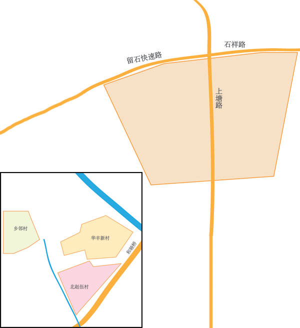

<!DOCTYPE html>
<html lang="en">
<head>
    <meta charset="UTF-8">
    <meta name="viewport" content="width=device-width, initial-scale=1.0, user-scaleble=no">
    <meta http-equiv="X-UA-Compatible" content="ie=edge">
    <style>
        html,body{ width: 100%; height: 100%; overflow: hidden; position: relative; margin: 0; padding: 0; }
        .map{ width: 100%; height: 100%; }
        .modalTitle{ line-height: 30px; padding-bottom: 10px; border-bottom: 1px solid #eee; font-size: 18px; }
        .modalContent{ margin-top: 10px; height: 440px; overflow: hidden; overflow-y: scroll; padding-bottom: 10px; }
        .modalInfoTitle{ font-size: 14px; line-height: 30px; padding: 0 10px; background-color: #eee; color: #666; border-radius: 4px; border: 1px solid #e6e6e6; }
        .modalInfoContent{ font-size: 12px; line-height: 24px; color: #999; margin: 10px 0; }
        .modalInfoContent img{ width: 100%; }
        /* 左上角 */
        .BMap_pop>div:nth-child(1)>div{ border-radius: 10px 0 0 0; }
        /* 右上角 */
        .BMap_pop>div:nth-child(3)>div{ border-radius: 0 10px 0 0; }
        /* 左下角 */
        .BMap_pop>div:nth-child(5)>div{ border-radius: 0 0 0 10px; }
        /* 右下角 */
        .BMap_pop>div:nth-child(7)>div{ border-radius: 0 0 10px 0; }
        /* 弹层指向箭头 */
        .BMap_pop>div:nth-child(8)>div{ }
        /* 弹层内容 */
        .BMap_pop>div:nth-child(9)>div{  }
        .BMap_pop>div>div{  }
        .BMap_pop .BMap_top, .BMap_pop .BMap_center, .BMap_pop .BMap_bottom{  }


    </style>
    <script src="https://cdn.bootcss.com/jquery/3.4.1/jquery.min.js"></script>
    <script type="text/javascript" src="//api.map.baidu.com/api?v=3.0&ak=R0lg8GyKHQI6hUGCuS3OGGVNN3tWVAtN"></script>
    <title>自定义图层</title>
</head>
<body>
    <div id="map" class="map"></div>
</body>
<script>
    $.ajax({
        url: "./js/data.json",
        type: "GET",
        dataType: "JSON",
        success: function(data){
            
        }
    })
    var map = new BMap.Map('map');
    var point = new BMap.Point(116.417854,39.921988);
    var marker = new BMap.Marker(point);
	map.addOverlay(marker);
    map.centerAndZoom(point, 14);
    map.enableScrollWheelZoom();
    var modalTitle = "<div class='modalTitle'>弹窗标题</div>"
    var modalHtml = "<div class='modalContent'>"+
        "<div class='modalInfoTitle'>学校地图</div>"+
        "<div class='modalInfoContent'></div>"+
        "<div class='modalInfoTitle'>户籍儿童教育服务区</div>"+
        "<div class='modalInfoContent'>1.石祥路以南，隽家塘河以北，热水港河以东，科园路以西区域内户籍适龄儿童;2.皋亭社区户籍适龄儿童;3.瓜山社区户籍飞股民子女。</div>"+
        "</div>";
    var opts = {
	  width : 400,     // 信息窗口宽度
	  height: 500,     // 信息窗口高度
	  title : modalTitle , // 信息窗口标题
	  enableMessage:true,//设置允许信息窗发送短息
	  message:"亲耐滴，晚上一起吃个饭吧？戳下面的链接看下地址喔~"
    }
    
    var infoWindow = new BMap.InfoWindow(modalHtml, opts);  // 创建信息窗口对象
    
	marker.addEventListener("click", function(){          
        map.openInfoWindow(infoWindow,point); //开启信息窗口
    });
    

</script>
</html>